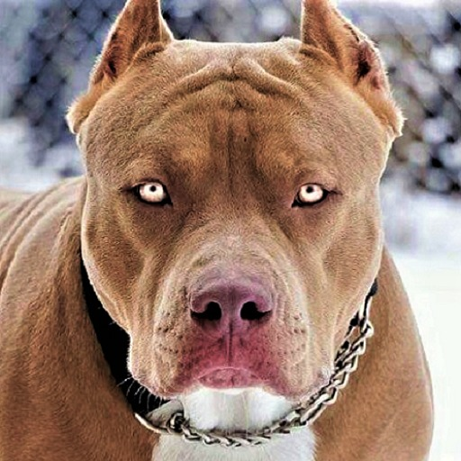

Tipos De Razas De Perros
{kind=link}
{kind=link}
{kind=link}
{kind=link}
{kind=link}
{kind=link}
{kind=link}
{kind=link}
{kind=link}
Publicidad
{kind=link}
Descubre los nuevos planes de salud para perros,conoce la protección integral de Vetplan Puppy para darle el mejor cuidado a tu cachorro.
Pastor Alemán

Personalidad
Los pastores alemanes se llevan bien con los niños y otras mascotas si crecen juntos, pero, tienden a dudar de la gente extraña, debido a sus instintos de guardianes.Se considera que esta raza es lista y fácil de adiestrar. Algunos pastores alemanes que no se han criado debidamente pueden ser muy excitables y nerviosos. Una mala socialización y un adiestramiento inadecuado, pueden desencadenar comportamientos de sobreprotección o agresivos.
Pitbull
El Pit Bull Terrier Americano es una raza de perro, originaria de Estados Unidos, que surgió a partir de la raza de los Bull- And_Terries, importados desde el Reino Unido en el siglo XIX.Tienes un temperamento Determinado ,Valiente e Inteligente.
Dogo de Burdeos

El dogo de Burdeos es una raza de perro de origen francés; forma parte de la gran familia de los dogos. Es un perro de gran fuerza y potencia, con un carácter firme y decidido que lo convierten en un gran perro guardián.
Datos curiosos
El perro pitbull no tiene un comportamiento determinado, la educación y el adiestramiento que reciba influirá totalmente en su etapa adulta ya sea con un temperamento amigable, reservado o reactivo. La Facultad de Medicina de la Universidad Estatal de Ohio y el Centro Médico Wexner ha realizado un estudio con la finalidad de detectar las razas de perro y los rasgos físicos que tienen estos canes con mayor riesgo de atacar y de provocar lesiones graves a los niños. Según el análisis de resultados del estudio, los perros de la raza pitbull son los más propensos a morder. Sin embargo, otras investigaciones afirman que cuando son educados y socializados desde cachorros, pueden llevarse muy bien con niños y convivir pacíficamente con otros animales.